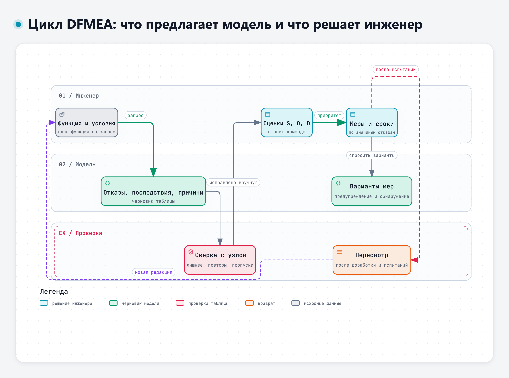
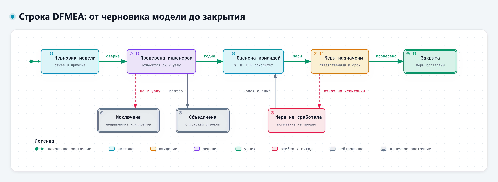

Модуль 3 · тема 3.2
Анализ потенциальных отказов конструкции
Модель расширяет перечень отказов, оценки и меры решает инженер
20.11.2026 · 11:10–16:10 · Виталий Пиков · архитектор информационной безопасности · pikov.expert
Логика DFMEA
1
Функция с количественным требованием
2
Вид отказа: как функция не выполняется
3
Последствие: что увидит водитель или сервис
4
Причина в конструкции, одна на строку
5
Меры предупреждения и обнаружения
6
Оценки S, O, D и решение команды
Пример: функция Ф-1
- Обеспечить пуск двигателя после стоянки до 14 суток при −25 °C
- Вид отказа: двигатель не запускается, запускается не с первой попытки
- Последствие: нужен внешний источник пуска
- Причины: повышенный ток покоя, ослабление клемм, разбаланс батарей
На что опирается метод
- ГОСТ Р 27.303-2021 (МЭК 60812:2018), с 01.01.2022, заменил ГОСТ Р 51901.12-2007
- AIAG & VDA FMEA Handbook, 2019: семь шагов
- Вместо ПЧР – приоритет действий (Action Priority)
- Какие документы и шкалы у вас – решают правила организации
Учебная шкала S, O, D
| Оценка | S – значимость | O – возникновение | D – обнаружение до выпуска |
|---|---|---|---|
| 9–10 | Угроза безопасности людей | Почти наверняка проявится | Ни расчёт, ни испытание не выявят |
| 5–8 | Не выполняет задачу, нужен внешний источник или эвакуация | У заметной части автомобилей | Только на поздних испытаниях |
| 1–4 | Неудобство, задача выполняется | Маловероятна | Надёжно – расчётом или ранней проверкой |
Документ 3.5 дополнения к кейсу. Шкала составлена для курса, у вас – шкалы вашей организации
Почему от ПЧР отходят
- ПЧР = S × O × D
- Пропуски в диапазоне значений, одинаковые числа при разных сочетаниях
- 9 × 2 × 5 = 90 и 3 × 6 × 5 = 90: безопасность и неудобство
- На занятии ПЧР не считаем, начинаем со строк с высокой значимостью
Сильная и слабая стороны
Однако в части результатов были ошибки и несогласованность, а рекомендации воспринимались как слишком общие, иногда странные и не отражающие глубины знаний специалиста в предметной области.
Collier, Gruss, Abrahams, 2024, doi.org/10.1111/risa.14351
Модели против экспертов
| Показатель | Модели | Эксперты |
|---|---|---|
| Значимость S, средняя | 7,3 | 4,1 |
| Возникновение O | 2,8 | 3,3 |
| Обнаружение D | 5,4 | 2,8 |
| Средний ПЧР | 110 | 36 |
Nair и соавт., 2026: 190 строк от моделей, после проверки осталось 79
Кто что делает в DFMEA
| Модель может | Решает инженер или команда |
|---|---|
| Перечислить отказы, причины, последствия | Какие строки относятся к узлу |
| Найти повторы | Значимость S |
| Предложить варианты мер | Возникновение O и обнаружение D |
| Задать вопросы о данных | Приоритет, меры, ответственные, сроки |
Самопроверка модели не работает
- Модель часто признаёт свой неверный результат правильным
- Проверяет человек
- Вторая модель или новый чат дают дополнительные замечания, а не проверку
- Каждое замечание инженер сверяет с кейсом, расчётами и документами
- Оценки S, O, D в черновике модели стираем и ставим заново
Как получить конкретный ответ
- Состав узла и границы анализа
- Требования ТЗ и условия эксплуатации
- Одна функция на запрос, по шагам
- «Оценки S, O, D не ставь», «нет данных – так и скажи»
Реальные отказы и рекламации
- Самые ценные данные для оценок O и D
- Это служебные сведения
- Только по маршруту, разрешённому правилами вашей организации
- На занятии – только учебные данные кейса
Инварианты для таблицы DFMEA
- Причина в границах анализа или помечена как граница
- В строке одна причина
- Одинаковое последствие – одинаковая значимость S
- Вид отказа – невыполнение именно этой функции
- Нет компонентов и систем, которых в узле нет
- Физика не нарушена
- Меры конкретны, у меры обнаружения есть критерий (оракул)
Вероятностный генератор + детерминированные проверки = надёжная система (А. Цымлов)
Четыре вопроса к хорошей мере
- Что меняется в конструкции или документации?
- Какую причину предупреждает или какой вид отказа позволяет обнаружить?
- Как проверим, что мера сработала?
- Кто и когда это сделает?
Разобранная строка DFMEA
| Столбец | Содержание |
|---|---|
| Вид отказа и последствие | Двигатель не запускается после 14 суток – нужен внешний источник |
| Причина | 85 мА через 30 мин больше 40 мА (п. 4.3, ред. 1); 62 мА через 2 ч – для энергобаланса, отдельной нормы нет (З-2). Больше всего – головное устройство (Д-1) |
| Текущие меры предупреждения | Расчёт энергобаланса (Д-2) – есть, но конструкция его не выполняет |
| Текущие меры обнаружения | Замер тока покоя через 30 мин, не более 40 мА (п. 4.3, ред. 1) |
| Рекомендуемые действия | Реле отключения головного устройства (задача К-1), повторный замер |
| Ответственный | Конструктор электрооборудования, срок – команда |
S, O, D ставит команда на практике. Предложение – в рекомендуемых действиях, пока его не выполнили
Задание 1. Черновик DFMEA по функции Ф-1
60 мин
- Данные: пп. 4.3–4.5 ТЗ по редакции 1 (день 1)
- Шаг 1: виды отказа и последствия
- Шаг 2: причины, одна на строку, с опорой на данные
- Шаг 3: текущие меры – только из данных, иначе «не установлено»; предложения – отдельно, с критерием
- Шаг 4: перенос в шаблон, предложения – в «Рекомендуемые действия», S, O, D пока пустые
Разбираем только функцию Ф-1 … Границы анализа: батареи, выключатель массы, блок предохранителей и реле, генератор, провода и соединения. Оценки S, O, D не ставь. Если данных не хватает, задай вопросы.
Задание 2. Проверка таблицы
30 + 30 мин
- 2а. Черновик модели (документ 3.6): решение по каждой из 10 строк
- Проверить ПЧР и вывод модели со ссылкой на стандарт
- 2б. Своя таблица по семи инвариантам
- Неприменимые – исключить, повторы – объединить, пропуски – дописать
- Вторая модель даёт замечания – каждое сверить с кейсом
Задание 3. Оценки и меры
45 мин
- Оценки S, O, D в команде по учебной шкале, с основанием
- Сравнить с оценками модели, если она их поставила
- Три строки для работы по учебному правилу
- Меры от модели – выбрать, назначить роль и срок
- В итогах – задание к модулю 5: выбрать рутинную задачу подразделения, принести к 25.11, 08:00
Что запомнить
- DFMEA идёт от функции
- Модель расширяет перечень, но даёт лишнее, повторы и пропуски
- S, O и D ставит команда
- Текущие меры – из документов, предложения – в рекомендуемые действия
- Одна функция на запрос, с описанием узла и условий
- Реальные отказы – только разрешённым путём
Цикл DFMEA: что предлагает модель и что решает инженер

Интерактивная версия – 08-Схемы/d3-cikl-dfmea.html
Строка DFMEA: от черновика модели до закрытия

Интерактивная версия – 08-Схемы/d3-stroka-dfmea.html
Автор курса – Виталий Пиков
| Регалии | Архитектор информационной безопасности · РБПО · DevSecOps · AppSec |
| Лектор и автор образовательных программ по ИБ и РБПО | |
| Телефон | +7 (963) 782-92-78 |
| vitaly@pikov.expert | |
| Сайт | https://pikov.expert |
| Telegram | @UnderLineSecurity |